A-2 画原理图
这一节把小徽章的电路画成原理图：从元件库里找到需要的元件、放到图纸上、改好参数、用导线和网络标签把它们连起来，最后让软件帮你检查一遍。本节会遇到一个真实的错误，正好示范“出错 → 定位 → 修复”的完整过程。
上一步双击了 1.P1，现在应该已经在原理图编辑器里了。界面各区域如果还不熟，回 1.0 节的热点图看看。
A2.1 打开元件库，搜索 NE555#
- 按 \ 打开底部面板，确认停在「库」标签
- 在搜索框里输入
NE555，按 return
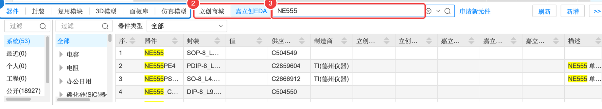
库面板最上面一排是类型（器件 / 封装 / 复用模块 / 3D模型 / 面板库 / 仿真模型），我们要找的是“器件”。旁边是来源：
- 嘉立创EDA：软件自带的公共库，元件很多，但看不到库存和价格。
- 立创商城：和立创商城（卖元件的网站）同步的库，能直接看到库存、价格，以及嘉立创贴片用的“基础库 / 扩展库”分类。
- 点来源「立创商城」
- 在搜索框里再按一次 return（切换来源后结果不会自动刷新，要重新搜索）
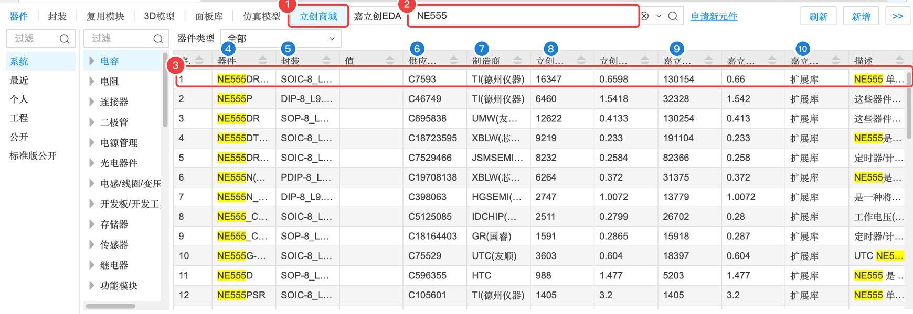
| 编号 | 列 | 含义（大白话） | 本例看什么 |
|---|---|---|---|
| 4 | 器件 | 器件名称（一般就是厂家型号） | NE555DR |
| 5 | 封装 | 芯片的“外形规格”，决定 PCB 上焊盘的形状。SOIC-8 是 8 脚贴片，DIP-8 是 8 脚直插 | SOIC-8（贴片） |
| 6 | 供应商编号 | 立创商城的商品编号，也叫 C 编号 | C7593 |
| 7 | 制造商 | 谁生产的 | TI（德州仪器） |
| 8 | 立创商城库存 / 价格 | 在立创商城单独买元件时的库存和单价 | 约 1.6 万个，约 ¥0.66 |
| 9 | 嘉立创库存 / 价格 | 让嘉立创工厂贴片（SMT）时，工厂仓库里的库存和单价 | 库存 13 万+ |
| 10 | 嘉立创库类别 | 基础库（工厂常备，贴片便宜）或扩展库（要临时上料） | 扩展库（555 没有基础库型号） |
| 描述 | 元件的简单介绍 | — |
A2.2 看一眼：一个器件 = 符号 + 封装 + 3D#
在列表里单击 NE555DR 那一行，右侧会出现预览：
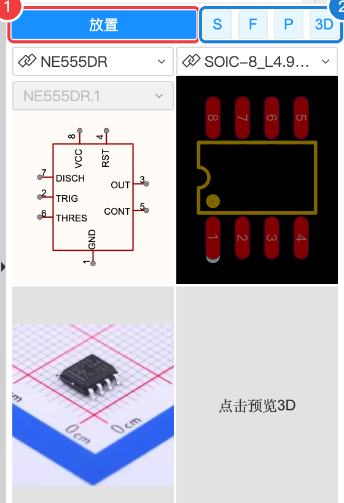
预览区的四格分别是这个器件的四种“样子”，点下面的按钮切换着看：
A2.3 放置 NE555#
- 确认列表里 NE555DR 那一行是选中（高亮）状态
- 点右上角蓝色的「放置」按钮
- 把鼠标移到画布上，元件会跟着鼠标走；在图纸中间单击放下
- 按 Esc 结束放置
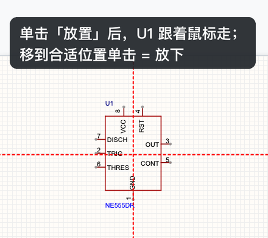
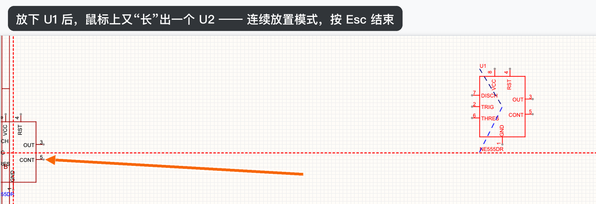
A2.4 放置其余元件#
其余元件都用同样的方法：来源选「立创商城」→ 搜索 C 编号 → 单击选中 → 放置 → Esc。按下表逐个放（顺序随意）：
| 搜索 | 元件 | 放几个 | 放好后的位号 |
|---|---|---|---|
C456012 | Type-C 6P 母座 | 1 | USB1 |
C23186 | 5.1 kΩ 0603 | 2 | R1、R2 |
C21190 | 1 kΩ 0603 | 1 | R3 |
C25819 | 47 kΩ 0603 | 1 | R4 |
C15850 | 10 µF 0805 | 1 | C1 |
C57112 | 10 nF 0603 | 1 | C2 |
C14663 | 100 nF 0603 | 1 | C3 |
C2290 | 白色 LED 0603 | 2 | LED1、LED2 |
C2286 | 红色 LED 0603 | 2 | LED3、LED4 |
C23138 | 330 Ω 0603 | 4 | R5 ~ R8 |
放置时按 空格 可以旋转 90°。电阻默认是横着的，竖着放更方便连线时就按一下空格：
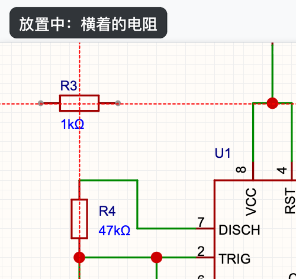
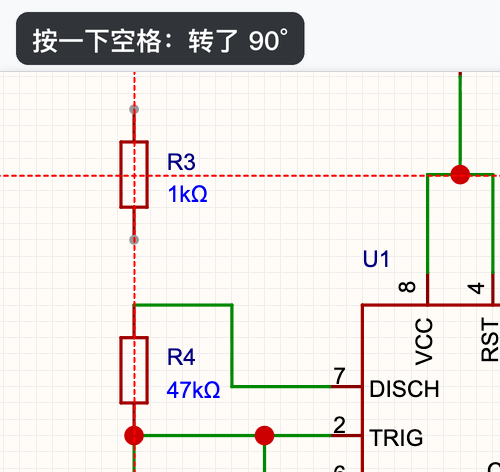
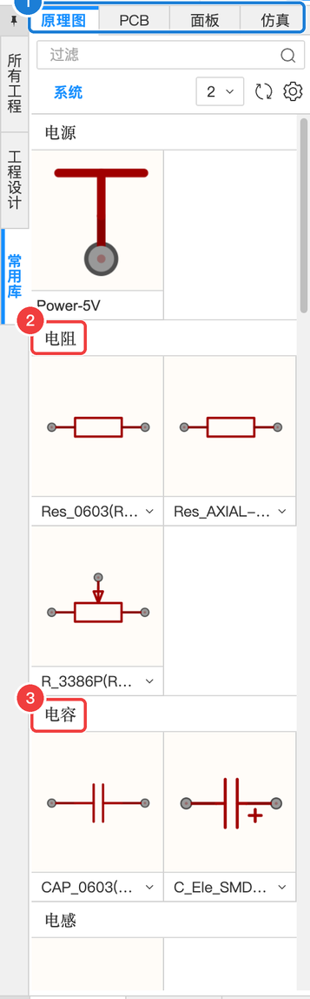
A2.5 看懂并修改元件属性#
单击画布上的 R3（1 kΩ 电阻），右侧属性面板就显示它的全部属性。每一项的意思如下（编号对应图中蓝色数字）：
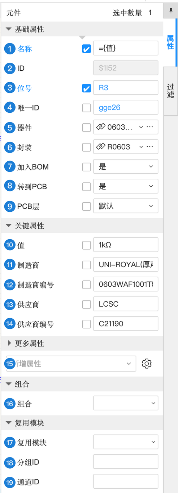
| 编号 | 属性 | 含义（大白话） | 本例怎么填 | 什么时候需要改 |
|---|---|---|---|---|
| 1 | 名称 | 元件在画布上显示的名字。={值} 表示“直接显示‘值’那一栏的内容” | ={值}（显示 1kΩ） | 一般不改 |
| 2 | ID | 软件内部编号 | $1152 | 不用管 |
| 3 | 位号 | 元件在板子上的“名字”：R 电阻、C 电容、U 芯片、LED 发光二极管、USB 插座 + 序号 | R3 | 编号乱了时可以手动改，或用「分配位号」 |
| 4 | 唯一ID | 原理图和 PCB 靠它认出“是同一个元件” | gge26 | 不要改 |
| 5 | 器件 | 这个元件对应库里的哪个器件；点右边的「…」可以更换成别的器件 | 0603WAF1001T5E | 想换型号时 |
| 6 | 封装 | PCB 上用哪种焊盘。为空的话就没法转到 PCB（后面 DRC 会报错） | R0603 | 想换大小（如 1206 方便手焊）时 |
| 7 | 加入BOM | 导出元件清单时是否包含它 | 是 | 不需要采购的东西（比如 Logo）选“否” |
| 8 | 转到PCB | 转换到 PCB 时是否带上它 | 是 | 只画在原理图上做说明的元件选“否” |
| 9 | PCB层 | 放到 PCB 的顶层还是底层 | 默认（顶层） | 一般不改 |
| 10 | 值 | 电阻的阻值、电容的容量 | 1kΩ | 想改闪烁速度时（记得同时换器件） |
| 11 | 制造商 | 生产厂家 | UNI-ROYAL(厚声) | — |
| 12 | 制造商编号 | 厂家的型号 | 0603WAF1001T5E | — |
| 13 | 供应商 | 从哪买：LCSC 就是立创商城 | LCSC | — |
| 14 | 供应商编号 | C 编号。嘉立创贴片就是按它来备料的 | C21190 | 换器件时会自动跟着变 |
| 15 | 更多属性 / 新增属性 | 可以给元件加自定义属性（比如“备注：需要手焊”） | 不用 | 有特殊说明时 |
| 16 | 组合 | 把几个对象组合在一起，一起移动 | 不用 | — |
| 17 | 复用模块 | 这个元件属于哪个“复用模块”（一段可重复使用的电路） | 不用 | 进阶：复用模块 |
| 18 | 分组ID | 复用模块里的分组 | 不用 | — |
| 19 | 通道ID | 多通道复用时的通道编号 | 不用 | — |
A2.6 把元件摆整齐#
拖动元件（按住左键拖）把它们大致摆成下面的样子。原理图摆放的习惯是：信号从左往右流，电源在上、地在下，相关的元件放在一起：
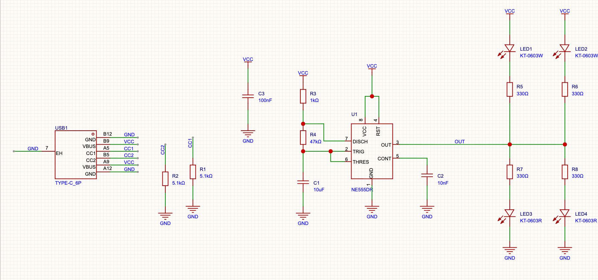
- 最左边：USB1，下面是 R1、R2
- 中间：U1，左边是 R3、R4、C1（定时部分），C3 放在电源附近，C2 放在 5 脚旁
- 右边：上面两路 LED1+R5、LED2+R6（白灯，接在 VCC 和 OUT 之间），下面两路 R7+LED3、R8+LED4（红灯，接在 OUT 和 GND 之间）
A2.7 用导线连线#
- 按 ⌥W 进入画导线模式（或点工具栏的导线图标），光标变成十字
- 移到起点引脚的端点（引脚末端的小灰点）上，单击
- 移动鼠标，导线会跟着走；需要拐弯时在拐点单击一下
- 移到终点引脚的端点上单击，这根线就连好了
- 继续画下一根，或按 Esc 退出
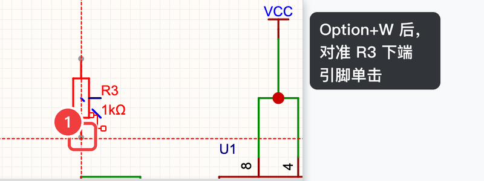
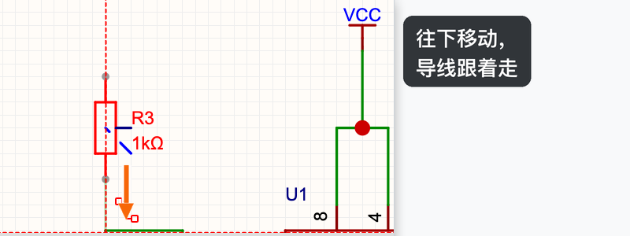
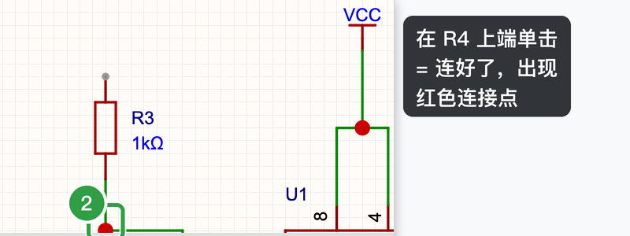
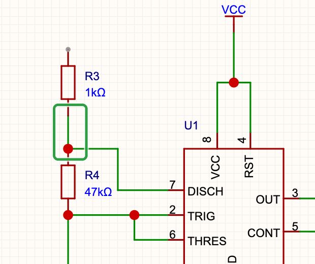
按下面的连接表把线全部连好（“网络”一列里写的名字，有的是导线连，有的用下面讲的电源符号和网络标签连）：
| 网络 | 连在一起的引脚 |
|---|---|
| VCC（5 V） | USB1 的 VBUS、U1 的 8 脚 VCC 和 4 脚 RST、R3 上端、C3 一端、LED1 和 LED2 的正极（A） |
| GND（地） | USB1 的 GND 和外壳 EH、U1 的 1 脚、R1 和 R2 一端、C1、C2、C3 的另一端、LED3 和 LED4 的负极（K） |
| OUT | U1 的 3 脚、R5、R6、R7、R8 各一端 |
| （放电节点） | R3 下端、R4 上端、U1 的 7 脚 DISCH |
| （定时节点） | R4 下端、C1 一端、U1 的 6 脚 THRES 和 2 脚 TRIG |
| （控制端） | C2 一端、U1 的 5 脚 CONT |
| CC1 / CC2 | R1 另一端接 USB1 的 CC1；R2 另一端接 CC2 |
| （LED 支路） | LED1 负极—R5，LED2 负极—R6（白灯：VCC → LED → 330Ω → OUT）；R7—LED3 正极，R8—LED4 正极（红灯：OUT → 330Ω → LED → GND） |
A2.8 放置电源（VCC）和地（GND）符号#
- 点工具栏上的 VCC 图标（鼠标停在上面会显示名字）
- 符号跟着鼠标，对准要接电源的引脚端点（例如 R3 上端）单击
- 继续放下一个，或按 Esc 结束
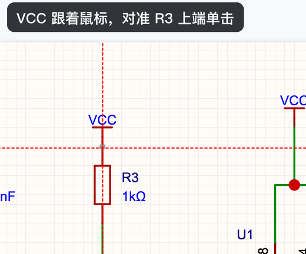
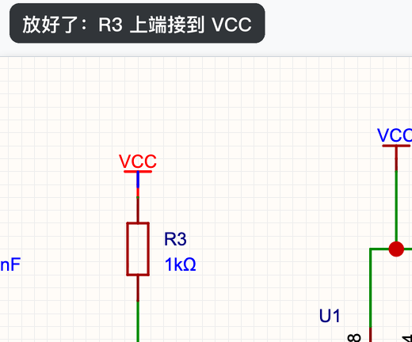
地符号 GND 在 VCC 图标旁边的下拉箭头里，也可以从左侧「常用库 → 电源」里拖出来，用法相同。
A2.9 网络标签：同名就相连#
U1 的 OUT（3 脚）要连到右边四个电阻。除了拉导线，还可以用网络标签：
- 按 ⌥N，鼠标上出现一个网络标签（默认名字 NET1）
- 对准 OUT 那根导线单击放下
- 在右侧属性面板的「名称」里把 NET1 改成
OUT
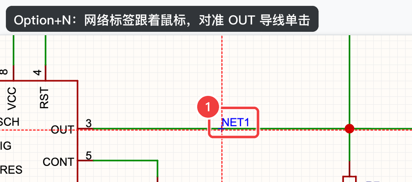
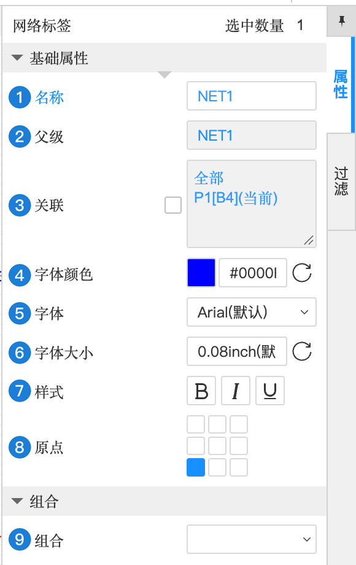
| 编号 | 属性 | 含义（大白话） | 本例怎么填 | 什么时候需要改 |
|---|---|---|---|---|
| 1 | 名称 | 网络的名字。名字相同的网络标签自动相连 | 改成 OUT | 每个标签都要起有意义的名字 |
| 2 | 父级 | 这个标签所属的网络，软件自动填 | NET1 → OUT | 不用改 |
| 3 | 关联 | 标签所在的图页和图纸分区（P1 的 B4 格） | 自动 | — |
| 4 | 字体颜色 | 文字颜色 | 默认 | 随意 |
| 5 | 字体 | 文字字体 | Arial（默认） | — |
| 6 | 字体大小 | 文字大小 | 0.08inch（默认） | 看不清时调大 |
| 7 | 样式 | 加粗 B / 斜体 I / 下划线 U | 不选 | — |
| 8 | 原点 | 文字以哪个点对齐（九宫格） | 默认 | — |
| 9 | 组合 | 和其他对象组合 | 不用 | — |
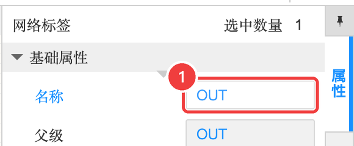
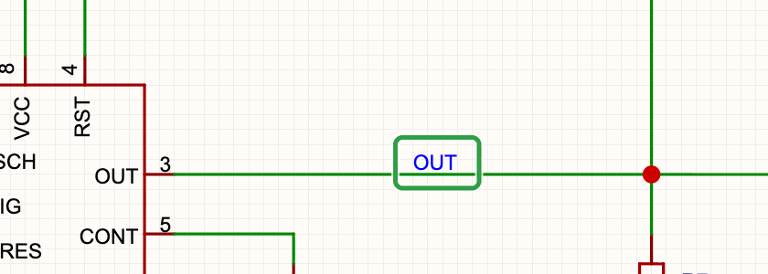
A2.10 不用的引脚：非连接标识#
如果芯片有某只脚故意不接，可以在它上面放一个「非连接标识」（工具栏上那个 ✕ 图标），告诉软件“这只脚不连是故意的”，检查时就不会报“引脚悬空”。本例 NE555 的 8 只脚全都用上了，不需要放；以后遇到有空脚的芯片记得用它。
A2.11 检查原理图（DRC），并修好一个真实的错误#
画完之后，让软件帮你检查一遍：
- 点菜单「设计」→「检查DRC」
- 底部面板会自动切到「DRC」标签，显示检查结果
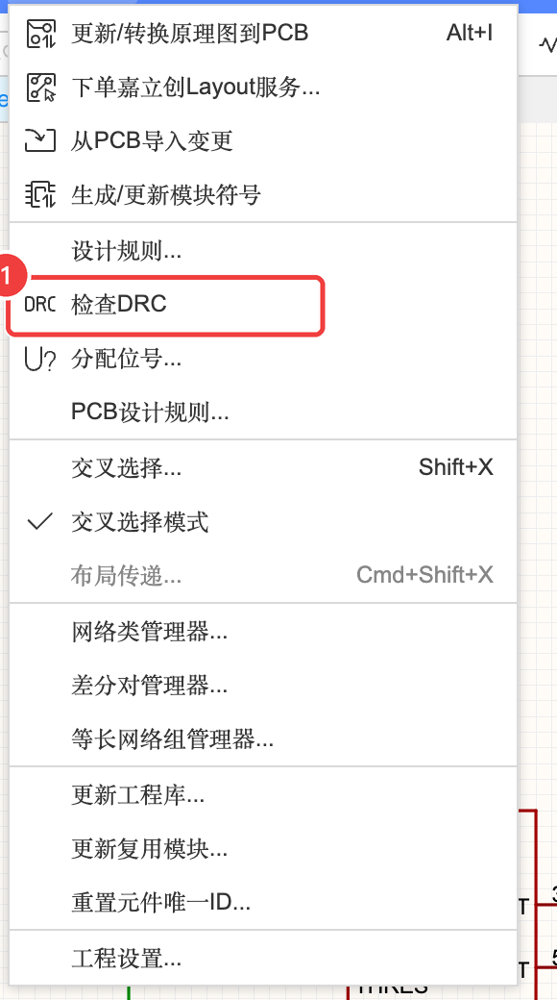
本教程实操时，第一次检查的结果是这样的（我们没有修改，原样保留下来做示范）：
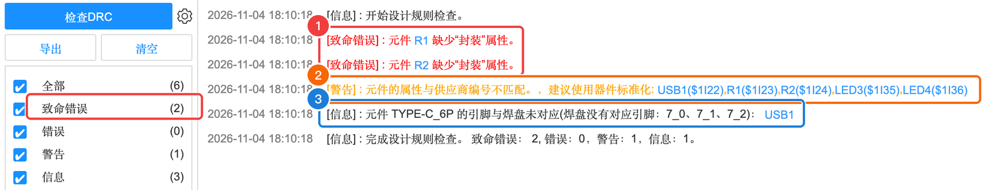
| 级别 | 意思 | 要不要管 |
|---|---|---|
| 致命错误 | 必须修，不修没法正确生成 PCB | ✅ 必须 |
| 错误 | 大概率是画错了 | ✅ 应该修 |
| 警告 | 可能有问题，建议看一下 | 看情况 |
| 信息 | 提醒，通常无害 | 了解即可 |
出错 → 定位 → 修复#
① 读懂报错。 两条致命错误写的是：“元件 R1 缺少‘封装’属性”“元件 R2 缺少‘封装’属性”。也就是说 R1、R2 不知道在 PCB 上该用什么焊盘。
② 定位。 在画布上单击 R1，看右侧属性面板——「封装」那一栏果然是空的：
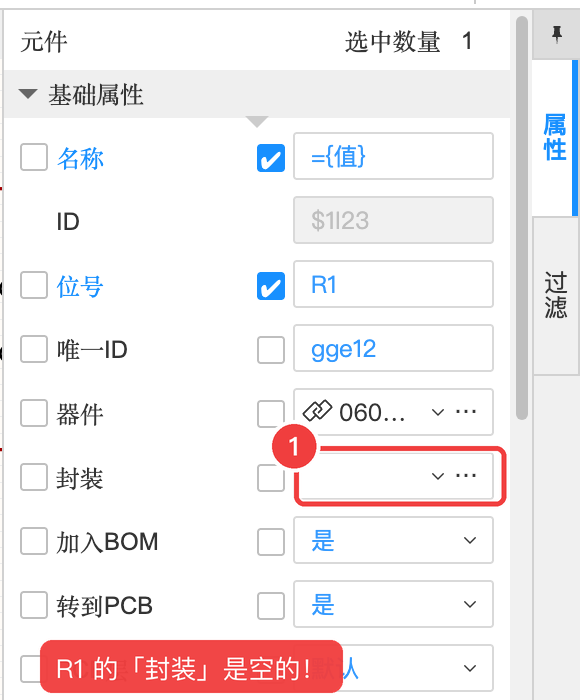
也可以点「器件」右边的「…」打开器件管理器，对比一下：其他电阻的封装都是 R0603，只有 R1、R2 这两行是空的：
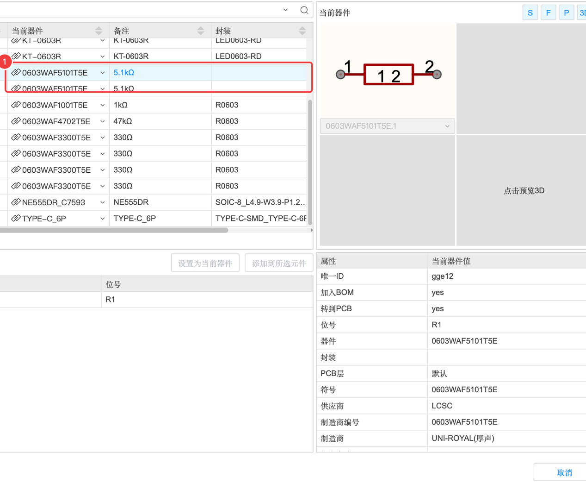
原因：本教程实操时 R1、R2 是用另一种方式（脚本）放进来的，没带上封装信息。你按前面的步骤从立创商城库放置一般不会遇到，但“某个元件缺封装”是新手最常见的错误之一，比如从「常用库」拖出来的通用元件、或者自己画的元件就可能没有封装。
③ 修复。 最稳妥的方法是删掉重放：
- 选中 R1、R2，按 delete 删除
- 底部库面板（来源：立创商城）搜索
C23186，选中 → 放置两个 → Esc - 把它们拖回原来的位置，重新连好导线（如果位号变了，在属性里改回 R1、R2）
- 再运行一次「设计 → 检查DRC」
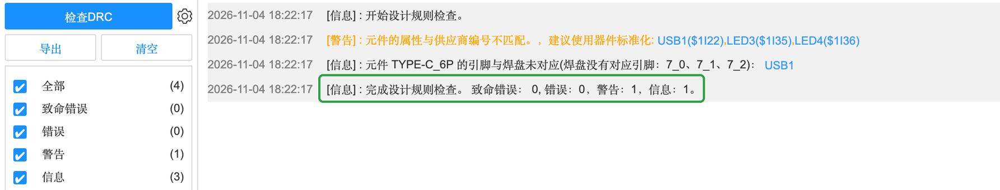
剩下的两条可以不管：
- 警告：“元件的属性与供应商编号不匹配，建议使用器件标准化”。这是软件建议你用「器件标准化」功能统一核对一遍元件信息，不影响生产（A-10 导出 BOM 时还会提醒一次）。
- 信息：“元件 TYPE-C_6P 的引脚与焊盘未对应（7_0、7_1、7_2）”。这几个是 USB 插座金属外壳的固定脚，在 PCB 上有焊盘（用来焊牢插座），原理图符号里没有对应的引脚，完全无害。
A2.12 分配位号#
元件放来放去、删了又加，位号可能会乱（比如有 R1、R2、R9，却没有 R3）。「设计 → 分配位号…」可以让软件自动按顺序重新编号。本例我们是按顺序放的，位号已经是整齐的 R1~R8、C1~C3、LED1~LED4，不需要用。
| 位号前缀 | 元件 |
|---|---|
| R | 电阻（Resistor） |
| C | 电容（Capacitor） |
| U | 芯片（IC） |
| D / LED | 二极管 / 发光二极管 |
| SW | 开关（Switch） |
| USB / J | 插座、接口 |
本节检查清单#
- 17 个元件都放好了，位号是 USB1、R1~R8、C1~C3、U1、LED1~LED4
- 按连接表连好了所有导线，VCC / GND 符号和 OUT 网络标签都放了
- 「设计 → 检查DRC」：致命错误 0、错误 0
- 按了 ⌘S 保存